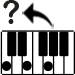
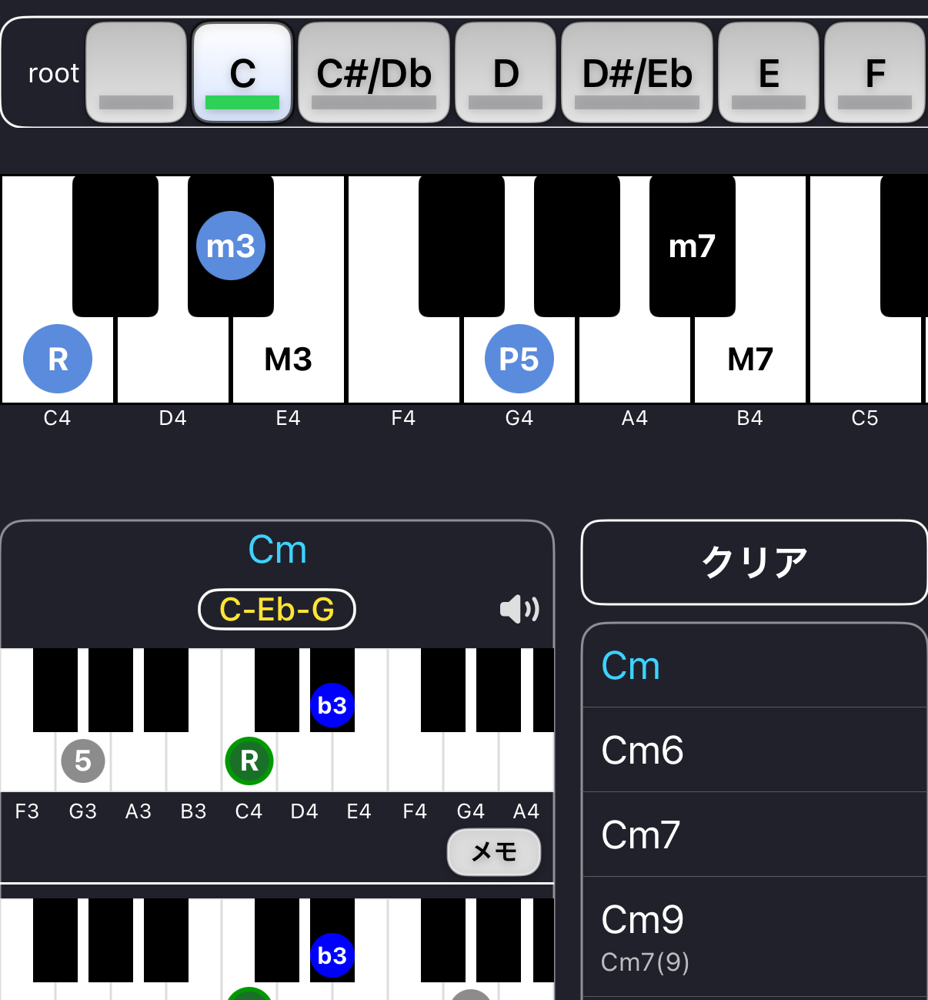

Reverse鍵盤からコードを逆引き
Reverseは ピアノ鍵盤からコード名を検索する機能です。
鍵盤を押すことで その音の組み合わせから 該当するコードを表示します。

コードを調べるには 鍵盤をタップして音を選択します。
選択された音から 一致するコードが表示されます。
鍵盤をタップすると その音が選択されます。
複数の音を選択することで コードを判定できます。
例
C E G → C
選択された音から 複数のコード候補が表示される場合があります。
同じ音の組み合わせでも 異なるコードとして解釈できる場合があります。
候補のコードをタップすると 上部の大鍵盤にポジションが表示されます。
鍵盤をタップすると コードの音を確認できます。
画面右上の スピーカーアイコンは 音のオン / オフを切り替えます。
Reverseで見つけたコードは メモボタンをタップすると Memoに追加できます。